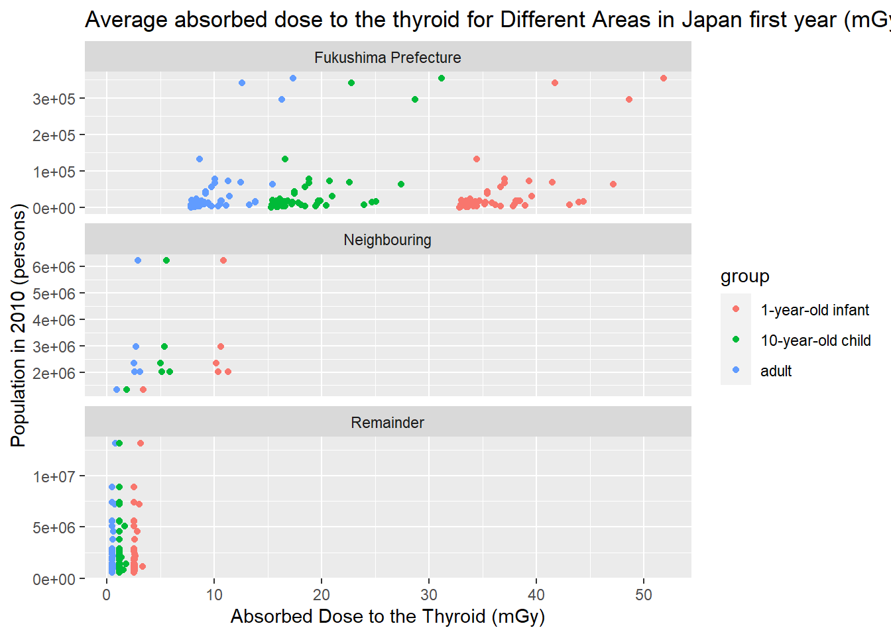

Chapter 7 Results


7.2 Accident at the Fukushima Daiichi Nuclear Power Station
7.2.1 RADIONUCLIDE RELEASES TO, DISPERSION AND DEPOSITION IN, Food
7.2.1.1 Seafood
- Marine Fish Species

The results of the analysis of radioactive cesium (134Cs and 137Cs) in marine fish species showed that immediately after the nuclear power station accident in 2011, about 16% of samples collected in Fukushima prefecture exceeded the current standard limit (100 Bq/kg). Since then, the percentages of samples exceeding the standard limit tends to decrease over time, dropping to 0 starting in 2015. In Fukushima Prefecture, there have been no such cases for 6 consecutive years until 1 sample exceeding the standard limit was detected in 2021. In prefectures other than Fukushima, after 4 years without such cases, one sample was detected exceeding the standard limit in 2019, 2021 and 2022, respectively.
- Freshwater Fish Species

The results of the analysis of radioactive cesium in freshwater fish species showed that many freshwater fish in Fukushima and other prefectures exceeded the current standard limit (100 Bq/kg) shortly after the nuclear power plant accident in 2011. Since then, the percentages of samples exceeding the standard limit has decreased year by year, with the exception of Fukushima prefecture in 2017 and 2021 and prefectures other than Fukushima in 2019.
Comparing marine and freshwater fish species, we found that freshwater fish were more likely to be detected in excess of radiocaesium.
Apparently, the corresponding trend for prefectures other than Fukushima Prefecture showed its percentages of samples with radiocaesium concentrations exceeding 100 Bq/kg were lower than in Fukushima Prefecture, and thus, fish in Fukushima prefecture were more contaminated with radioactive cesium in the four years following the accident than in other prefectures. And the radiocaesium concentration decreases over time for fish species.
7.2.1.2 Agricultural Products
Rice, vegetables and fruits are the necessities of everyone’s daily life, providing some essential nutrients for our body and maintaining our health. So how do they perform in terms of radiocaesium concentrations? In order to see the change over time, we made a time series plot as shown below.

From the plot we can see that the radioactive cesium content of these essential agricultural products is basically within the safe range. About 0.06% of fruit samples exceeded the current standard limit in 2017, while other samples contained less than 100 Bq/kg of radioactive cesium.
Therefore, the accident has little impact on these agricultural products as a whole.
7.2.1.3 Raw Milk
Milk is essential for people especially for infants, it not only contains high-quality protein, but also trace elements, especially calcium, that our body needs for growth. The standard limit of radioactive cesium content of milk is half of that of general food, which is 50 Bq/kg.

Years here, such as 2010, are from April 2020 to March 2021, and so on. We see that about 4.62% of raw milk samples in 2010 exceeded the current standard limit, all those samples that exceeded were collected in March 2021 (but belongs to Year 2020 as defined), immediately after the accident, while all other samples contained less than 50 Bq/kg of radioactive cesium in the following years.
Therefore, there is little impact on raw milk after the first year of the accident.
7.2.2 Assessment of Doses to the Public
The two most important radionuclides are iodine and cesium, with varying dose levels. Iodine-131 is first absorbed by the thyroid after ingestion or inhalation, but it dissipates quickly because of its short half-life (8 days). The two isotopes of cesium (cesium-134 and cesium-137) have relatively long half-lives (2 and 30 years, respectively), and the exposure to the human body is fairly uniform.
The Committee’s estimates of municipality- and prefecture-average doses are intended to be characteristic of the average doses to the thyroid absorbed by people living in each municipality or prefecture for the first year after the Fukushima-Daiichi nuclear power station accident. These data are provided for each age group (adults, 10-year-old children and one-year-old infants) for each geographical area group (all non-evacuated districts within Fukushima Prefecture, districts close to Fukushima prefectures (Chiba, Gunma, Ibaraki, Iwate, Miyagi and Tochigi, labeled as Neighbouring), and for all remaining prefectures in Japan (labeled as Remainder)). And four principal pathways by which members of the public can be exposed for the radioactive material released to the atmosphere are considered and summed up.
Due to the fact that the amount of data is too large to run in R, a dot plot is performed instead of a histogram or ridgeline plot.
The plot clearly showed the trend that younger people tend to absorb higher dose to the thyroid than older people. It’s also obvious that the closer to Fukushima prefecture, where the accident occurred, the higher dose absorbed to the thyroid.
Now let’s take a closer look at Fukushima prefecture.

The ridgeline plot allow us to easily compare distributions of the absorbed doses. We see that the distributions are multimodal that have many peaks The distribution of speeds for dawn, day, and dusk are all very similar and basically unimodal about ~125 knots, with some collisions happening at faster speeds. The distribution of speeds at night are very different – it is almost trimodal with modes at ~125 knots, 200 knots, and 250 knots.